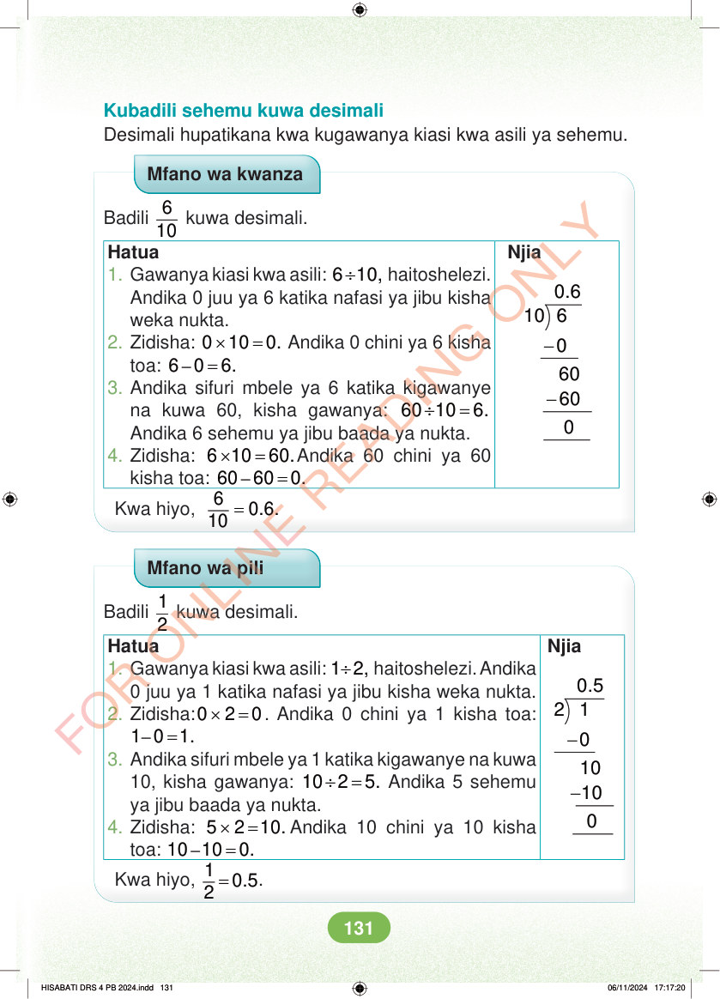

Kubadili sehemu kuwa desimali Desimali hupatikana kwa kugawanya kiasi kwa asili ya sehemu. Mfano wa kwanza Badili 6 10 kuwa desimali. Njia 0.6 10 6 - - 0 60 60 0 Hatua 1. Gawanya kiasi kwa asili: ÷ 6 10, haitoshelezi. Andika 0 juu ya 6 katika nafasi ya jibu kisha weka nukta. 2. Zidisha: × = 0 10 0. Andika 0 chini ya 6 kisha toa: – = 6 0 6. 3. Andika sifuri mbele ya 6 katika kigawanye na kuwa 60, kisha gawanya: ÷ = 60 10 6. Andika 6 sehemu ya jibu baada ya nukta. 4. Zidisha: × = 6 10 60.Andika 60 chini ya 60 kisha toa: – = 60 60 0. Kwa hiyo, = 6 0.6. 10 Mfano wa pili Badili 1 2 kuwa desimali. Njia 0.5 2 1 - - 0 10 10 0 Hatua 1. Gawanya kiasi kwa asili: ÷ 1 2, haitoshelezi. Andika 0 juu ya 1 katika nafasi ya jibu kisha weka nukta. 2. Zidisha: × = 0 2 0. Andika 0 chini ya 1 kisha toa: – = 1 0 1. 3. Andika sifuri mbele ya 1 katika kigawanye na kuwa 10, kisha gawanya: ÷ = 10 2 5. Andika 5 sehemu ya jibu baada ya nukta. 4. Zidisha: × = 5 2 10. Andika 10 chini ya 10 kisha toa: – = 10 10 0. Kwa hiyo, = 1 0.5 2 . HISABATI DRS 4 PB 2024.indd 131 HISABATI DRS 4 PB 2024.indd 131 06/11/2024 17:17:20 06/11/2024 17:17:20